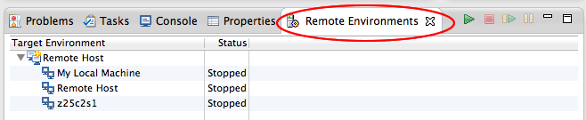
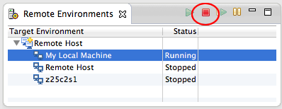
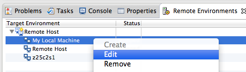

Remote Tools is a lightweight remote service provider that is included with the Parallel Tools Platform (PTP). To access the remote target system, PTP supports a number of remote service providers. Currently supported remote service providers include Remote Tools (part of PTP) and the Eclipse Remote Systems Explorer (RSE) which is an optional package that can be installed at any time. The preferred remote service provider is Remote Tools which supports all the PTP and Remote Development Tools (RDT) functionality, however some installations use additional features that are only available in RSE. Most PTP information is described using Remote Tools, since it is the simplest and easiest to use.
See also Local vs. Remote Projects for more information on local and remote projects, and the different service providers.
To edit remote connection information after a connection is created, e.g. to change userid, password, etc., first select the Remote Environments view.

To edit a connection, it must first be stopped. To stop a connection, select it and use the "red box" action on the Remote Environments view toolbar.

Once stopped, edit the connection via the context menu (right mouse)

Then make any changes to the connection and select Finish
The connection need not be manually restarted. It will automatically restart the next time communication with the target machine is needed.